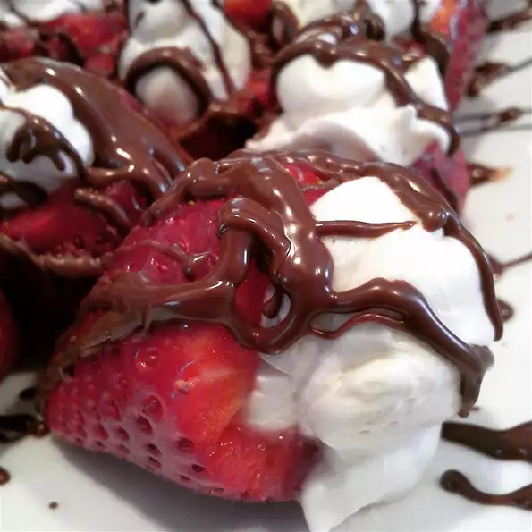

Valentine Night Strawberries

Description
Strawberries stuffed with lightly-sweetened cream cheese and walnuts are perfect for that romantic evening.
They go great with champagne! Pecans also work well in this recipe.
Ingredients
- 20 fresh strawberries
- 1 (3 ounce) package cream cheese, softened
- 2 tablespoons chopped walnuts
- 1½ tablespoons confectioners' sugar
Steps
- Dice two strawberries and set aside. Cut the stems off of each of the remaining strawberries,
forming a base for strawberries to stand on. Starting at the pointed ends and cutting most of
the way, but not completely through the stem end, slice each strawberry into four wedges.
- Beat the cream cheese until fluffy; stir in the diced strawberries, walnuts, and powdered sugar.
Spoon or pipe about a teaspoon of mix into each strawberry.